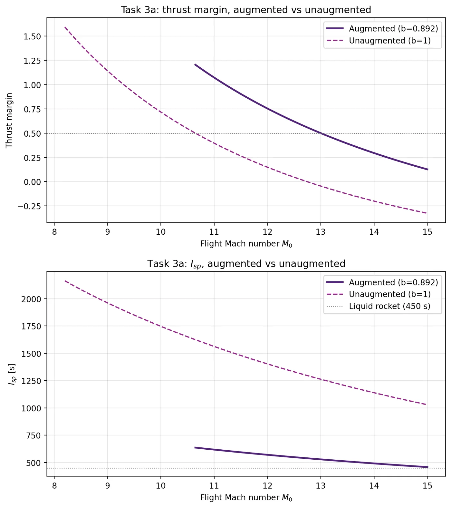
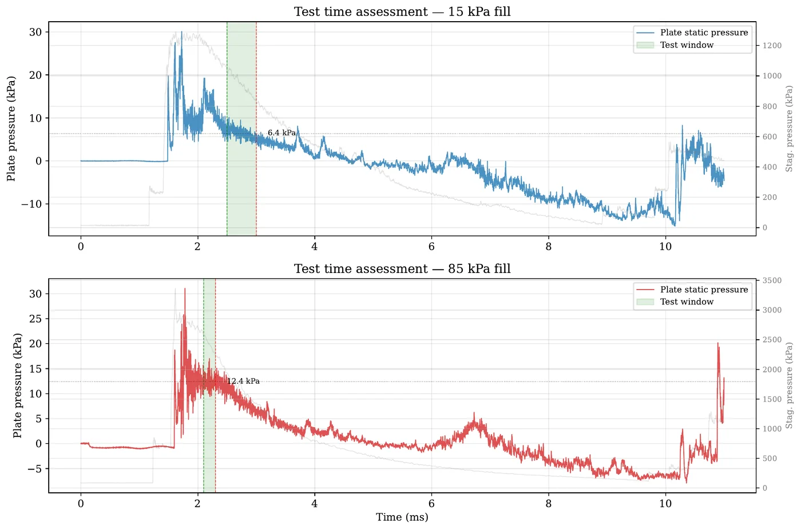
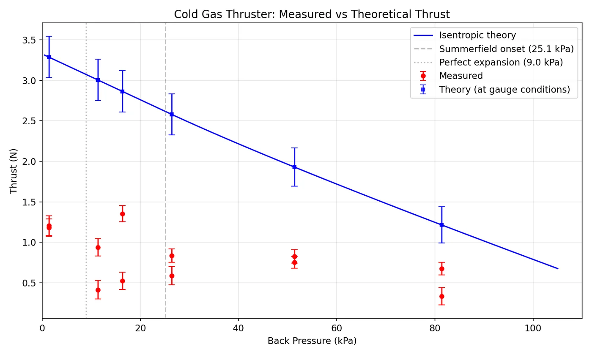
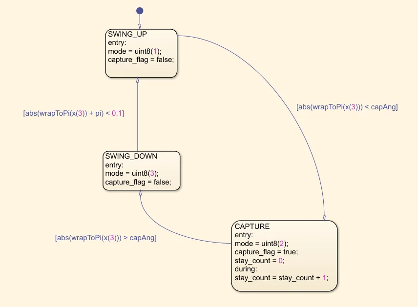
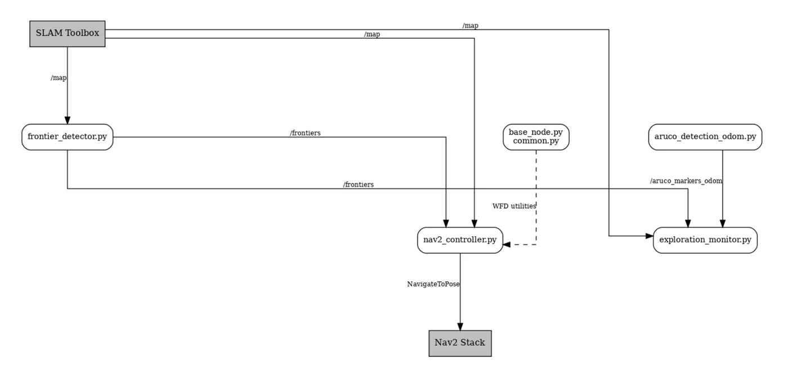
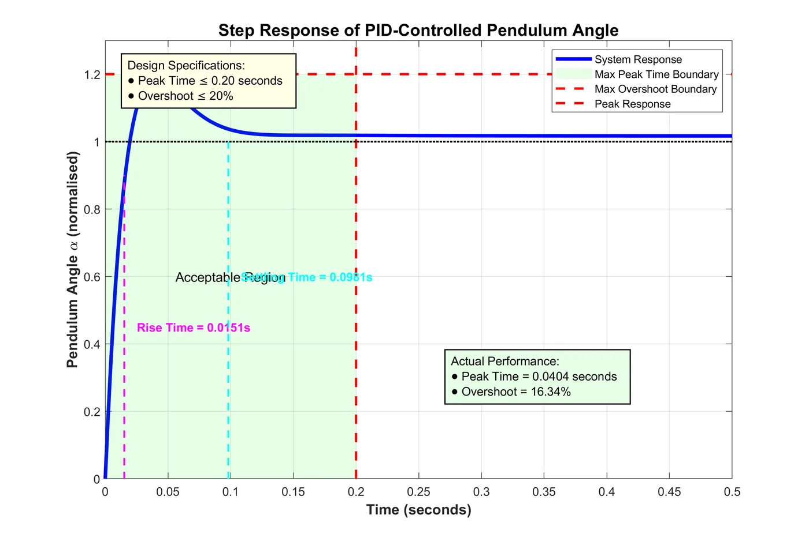
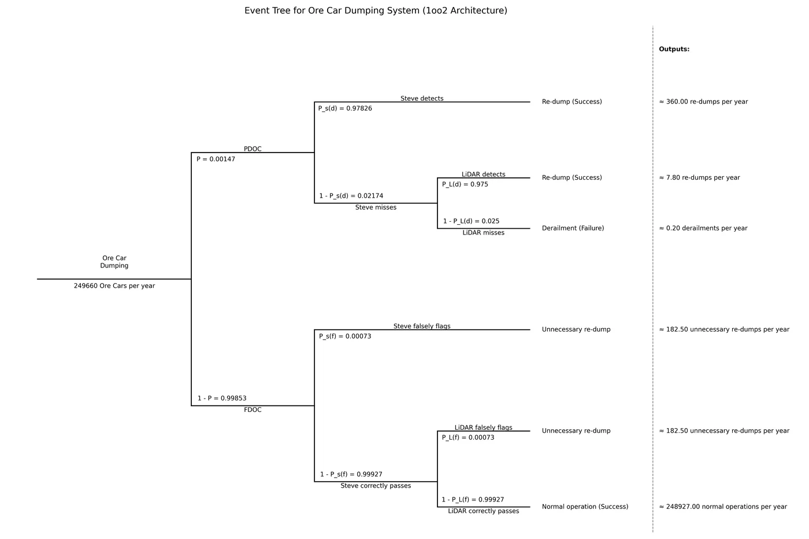
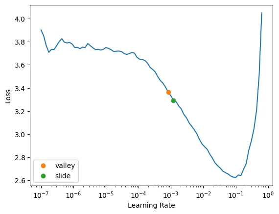

Selected coursework
Nine pieces of coursework from my degree at UQ, newest first. Each says whether it was mine alone or a team effort, and what my part was.
- Courses
- AERO4450, AERO4470, METR6203, METR4202, METR4201, METR3100, ELEC4630, MATE7015
- When
- 2025 – 2026
- Tools
- Python, MATLAB and Simulink, ROS 2, fastai, Fusion 360
Scramjet cycle with nitrous augmentation
A 1-D cycle analysis of a scramjet that burns part of its hydrogen with on-board nitrous oxide to keep thrust up at higher Mach numbers. The combustion part was mine alone: in Python I worked out the heat release of hydrogen burning with nitrous oxide, 164.6 MJ/kg. For the final report, where I did most of the work, we built the cycle model and matched the lecture's Mach 10 example to within 7.2% on thrust. Without nitrous the critical Mach number was 10.65; at Mach 13, burning about 11% of the hydrogen with nitrous oxide restored the brief's 0.5 thrust margin. It is a simulation of a fictional scenario.

Reflected shock tunnel analysis
An analysis of shots taken for our class group in UQ's Drummond reflected shock tunnel with a Mach 7 nozzle, at fills of 15 and 85 kPa. In Python I calibrated the wall pressure transducers in place, detected shock arrival automatically and measured shock Mach numbers of 3.676 ± 0.088 and 2.671 ± 0.047, carrying the uncertainty through every step. The measured plate pressures, 6.39 ± 1.15 and 12.39 ± 1.36 kPa, sat within one standard deviation of both the equilibrium and the calorically perfect predictions.

Cold gas thruster against nozzle theory
Firing a small cold gas thruster into back pressures from 1.35 to 81.35 kPa and comparing its thrust with isentropic nozzle theory, using the Summerfield criterion for flow separation. I did most of the analysis and wrote the notebook behind every figure and table, including the thrust-stand calibration (R² 0.995). Measured thrust ran 44 to 86% below theory, and repeat firings scattered by up to 0.8 N, more than the instrument uncertainty.

Titanium crank arm for metal 3D printing
A hollow Ti-6Al-4V bicycle crank arm designed for laser powder bed fusion: 408 MPa peak stress at the 1800 N test load, a safety factor of 2.11, and 21% lighter than my solid starting design. It is a design only. The full page has the section, the static study and the printed prototypes.
Control design for three rigs
On a gyro-actuated inverted pendulum I was responsible for the MATLAB and Simulink model, the LQR capture controller and integration, with Stateflow switching between an energy-based swing-up and balance. In simulation it swung up in about 1.1 s and was caught, but we ran out of time to get the swing-up working on the rig. On a Quanser 3-DOF helicopter I built the linearised hover model and the Simulink model that joins the observer, controller and plant, and the controller flew under joystick control. On my own, I designed a state feedback controller and observer for a linearised Whipple bicycle; in simulation its step response overshot by 3.4%.

Autonomous exploration and marker search
A TurtleBot3 had to explore a map it had never seen and find the ArUco markers placed around it, with nobody driving. It maps with SLAM Toolbox and drives with Nav2. As the team's integration lead I wrote the exploration and recovery side: a frontier detector that scores each frontier by how much unknown space a ray cast says it would reveal, goal ranking and blacklisting, stuck detection with recovery, and a coverage monitor. I made 81 of the team's 101 commits.

Furuta pendulum balance controller
Balancing an inverted pendulum on a motor-driven rotating arm. I derived the motor and gearbox model by hand, checked it in MATLAB, and placed a PID controller's zeros on the root locus. In simulation it met the brief's limits of 0.2 s peak time and 20% overshoot, with 0.040 s and 16.3%. An outer PD loop with a low-pass filter then held the arm at its set angle with no drift. It is a simulated design, on the course's nonlinear Simulink model rather than the rig.

Functional safety case for a LiDAR check
A fictional mine wanted a LiDAR check to catch partly dumped ore cars before they derail. Event trees over 249,660 cars a year showed the human supervisor alone still let 8 derailments a year through, and that the LiDAR needed 97.5% detection with a 0.018% false-flag rate, which is SIL 1. A 1oo2 voting design cut derailments to 0.2 a year but used all 365 unnecessary re-dumps the brief allowed. An STPA found 7 unsafe control actions and 16 loss scenarios, and I recommended a 300 ms command timing limit.

Road signs and rice leaf disease
For road signs I built a MATLAB bank of 3,268 templates across 7 sign shapes, found candidates with colour masks and edges, and scored each match on template overlap and chamfer distance; on the course's 10 or so test photos it found the yellow diamond signs more than 90% of the time. On a Kaggle rice leaf disease task in fastai, tuning took a ResNet26d from 88.1% to 97.0%, and my best ConvNeXt Large scored 98.387%, just short of the brief's 98.846% benchmark.

Credits
Team entries say what my part was; the rest was my teammates'. Course briefs, rigs, the shock tunnel and the course models belong to UQ.